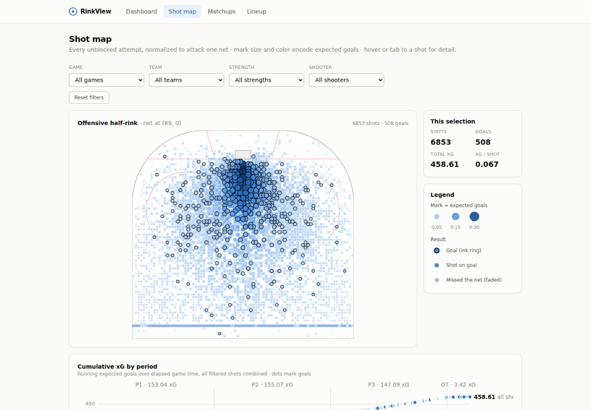

RinkView
Shot quality, matchups and lineup decisions for a full NHL season, with the uncertainty kept on screen.
The problem
Questions like was that a good shot or who should play with whom usually get answered with raw counts and gut feel. Small samples lie, and most tools hide that. RinkView is a decision-support app for hockey-operations staff that shows the number and how much to trust it, for any of the 32 clubs.
What it does
- Shot maps with an expected-goals overlay. Every unblocked attempt of the season on one half-rink, filterable by game, team, strength, shooter, period, result and danger.
- Team shot-quality trends per game across a season segment, and a per-player matchup table built from true shift overlaps.
- A trade and lineup evaluator for every skater in the league: on-ice results together and apart, pair matrices, trade-out and slot-swap scenarios, and cross-team trade-ins rated on the player's own minutes with chemistry shown as an explicit unknown, never a number.
- Ask RinkView, a chat over the dataset where the model is never the source of a number: every figure comes from a visible, read-only tool call. Provider-agnostic across Anthropic, OpenAI and Gemini.
How it is built
- Django and Pandas serve a read-only JSON API over SQLite. A Next.js shell mounts framework-free D3 and Highcharts modules, so the chart engine has no React in it and is unit-tested on its own.
- The expected-goals model is a two-feature logistic regression fitted by maximum likelihood on the whole league, with a decile calibration table and a six-team holdout in the repo.
- On-ice rates use empirical-Bayes shrinkage with a league-pooled shrinkage parameter, server-enforced sample floors and bootstrap uncertainty bands. The evaluator never claims a causal player effect, and every statistical choice has a written defense.
- One stateless container: the database is baked into the image, the frontend is a static export served from the same origin, deploys run automatically from CI-green commits via keyless GitHub Actions to Google Cloud Run.
- Built solo, running an AI-assisted workflow end to end: I scoped each pass, directed it, reviewed the result and verified it against the real data before it shipped.
Evidence
- 1,312 games, all 32 teams, the complete 2025-26 regular season from archived NHL API responses, with the source commit recorded in every filedata/PROVENANCE.md
- 112,036 shot attempts ingested; goal events reconcile with the official final score in every one of the 1,312 gamesvalidate_raw_data.py
- xG fitted on 112,058 league shots, mean-calibrated by construction, calibration reported per deciledocs/xg_fit_report.md
- 319 backend and 119 frontend tests, all passing on the current commit when I ran them for this pagepytest · node:test
- CI on every push: migrations, an ingest smoke test, the JS suite, a production build and a Docker boot check.github/workflows

Stack
- Python
- Django
- Pandas
- scikit-learn
- SQLite
- Next.js
- D3
- Highcharts
- Tailwind
- Docker
- GitHub Actions
- Google Cloud Run